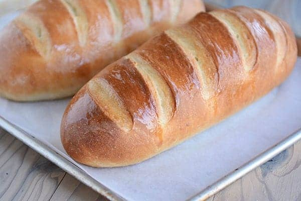

<div class="modal"[@slideUp]>
    <div class="modal-content">
        <span id="recent-text">Recent</span>
        <div class="search-news">
            <div class="search-date">
                <div class="bafo"></div>
                <div class="bafo"></div>
                {{currentMonth}} {{today | date: 'd'}}
            </div>
            <div class="meme">
                
            </div>
            <div class="games">
                <div class="game-title">
                    Games for you
                </div>
                <div class="game-ico">
                    
                    Doom II
                </div>
                <div class="game-ico">
                    
                    Quake II
                </div>
                <div class="game-ico">
                    
                    Half Life
                </div>
                <div class="game-ico">
                    
                    Need for Speed
                </div>
            </div>
            <div class="food">
                <div class="food-title">
                    Popular Recipes
                </div>
                <div class="food-ico">
                    
                    Milk Bread
                </div>
                <div class="food-ico">
                    
                    French Bread
                </div>
                <div class="food-ico">
                    
                    Sourdough Bread
                </div>
            </div>
        </div>
        <div class="recent-apps">
            <div class="sb-shortcut">Visual Studio Code</div>
            <div class="sb-shortcut">RunJS</div>
            <div class="sb-shortcut">Github Desktop</div>
            <div class="sb-shortcut">Docker</div>
            <div class="sb-shortcut">Settings</div>
        </div>        
    </div>    
</div>
